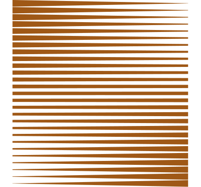

Bienvenue,
Je suis Benjamin, développeur frontend. Engagé pour un web simple et accessible.

À propos
Développeur frontend passionné par l'art de faire plus avec moins. Je crois en la puissance de la simplicité et en l'importance de créer des expériences web qui fonctionnent pour tous. Un bon code n’est pas celui qui impressionne mais celui qui facilite la vie des utilisateurs.

Parcours
“La connaissance s’acquiert par l’expérience, tout le reste n’est que de l’information.”
Mon parcours dans le développement web n’est pas des plus classiques.
Pendant plus d’une décennie j’ai exploré le monde de l’apprentissage et de la communication à travers
l’éducation populaire, notamment via le théâtre-forum. Cette expérience m’a doté d’une compréhension
approfondie des dynamiques humaines.
En 2021, j’ai décidé d’explorer un nouveau territoire en me formant au Wagon de Lyon puis en poursuivant avec
une alternance de deux ans au sein de l’entreprise Remixt.
J’ai pu participer à la modernisation d’une application legacy, implémenter une API RESTful, créer des
visualisations de données interactives, et tant d’autres choses.
Projets
“L'obstacle est le chemin.”
toDys
Sportsee
Contact
Si vous avez une question, une idée ou un projet à partager, je serai heureux de vous répondre. N'hésitez pas à me contacter !
- benjaminsiret@outlook.fr
- Téléphone
- +33 7 81 26 78 80
- GitHub
- github/BenjaminSiret
- linkedin/BenjaminSiret